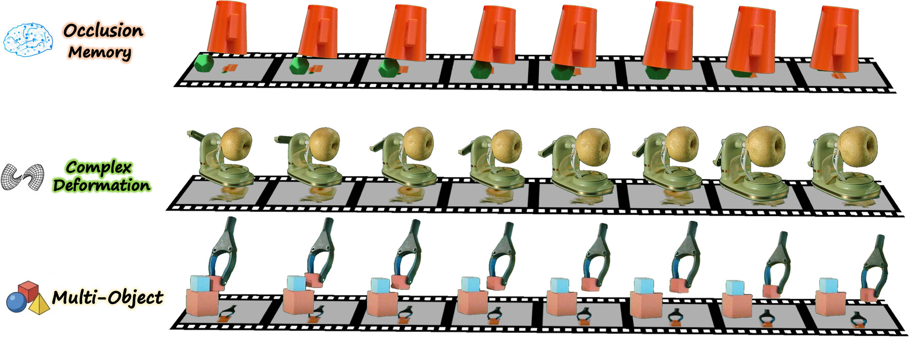
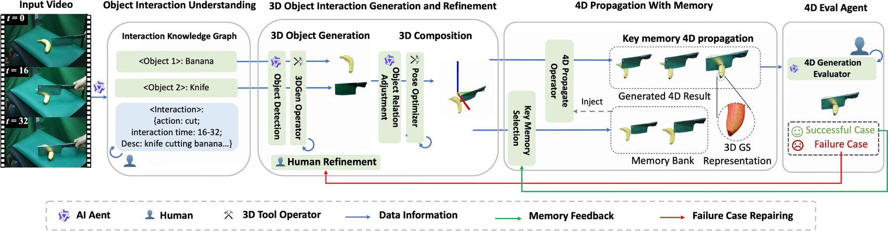
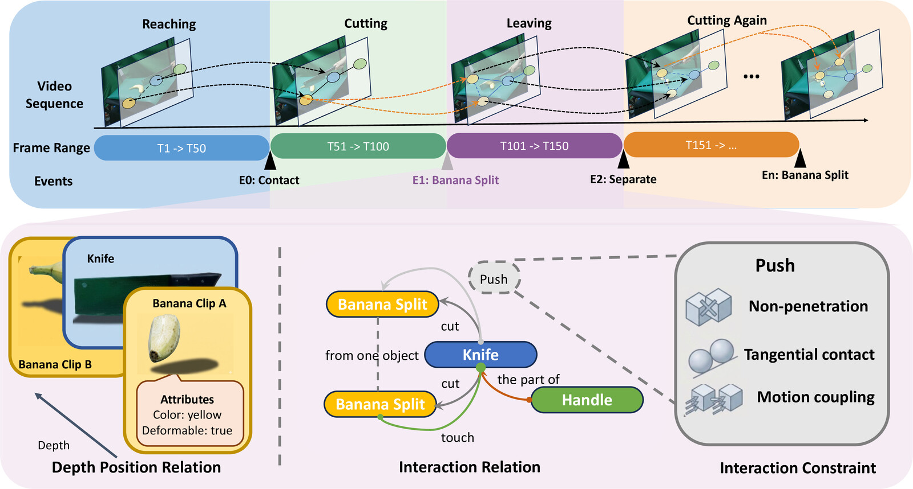
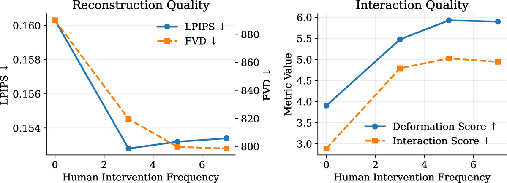
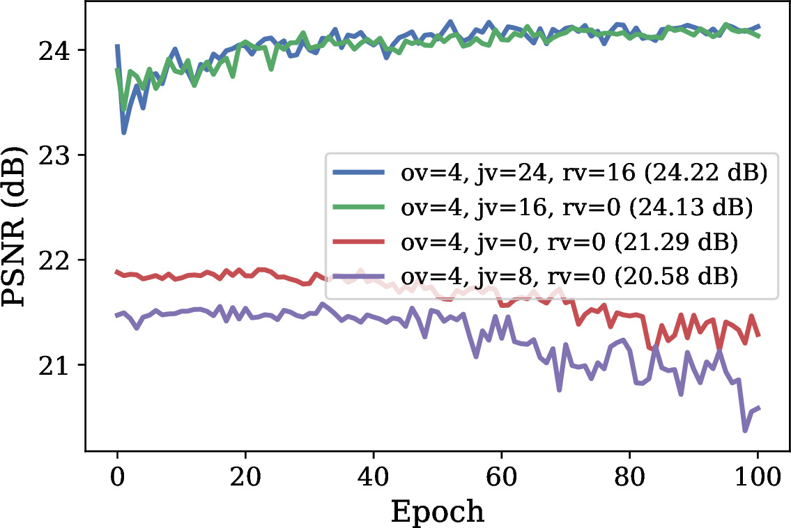

HAT-4D reconstructs the 3D geometry, temporal dynamics, and physical interactions of multiple objects from a single in-the-wild monocular video through human-agent collaboration.
Extracting dynamic 4D object interactions from massive, in-the-wild monocular videos offers a highly efficient data collection pathway for scaling Embodied AI and training Vision-Language-Action (VLA) models. However, existing monocular 4D reconstruction methods primarily focus on isolated objects, often failing under the severe occlusions and complex dynamics inherent in multi-object interactions. To bridge this gap, we propose HAT-4D, the first agentic framework designed to reconstruct the 3D geometry, temporal dynamics, and physical interactions of multiple objects from a single video. By integrating Vision-Language Models (VLMs) with a multi-level human-in-the-loop feedback mechanism, HAT-4D efficiently resolves depth ambiguities and interaction-induced occlusions during 3D generation and 4D propagation, yielding physically plausible assets without relying on expensive multi-camera rigs. Functioning as a scalable data engine, HAT-4D facilitates the creation of MVOIK-4D, an open-world benchmark for monocular 4D interaction reconstruction, accompanied by a novel multi-dimensional evaluation protocol focused on physical plausibility and temporal consistency. Extensive experiments on MVOIK-4D demonstrate that HAT-4D achieves state-of-the-art performance on most evaluation metrics, while maintaining competitive semantic alignment. Ablation studies show that introducing a small amount of human feedback significantly improves interaction reconstruction. In addition, the data produced by HAT-4D effectively improves baseline performance when used for finetuning.




@inproceedings{Li2026hat4d,
title = {HAT-4D: Lifting Monocular Video for 4D Multi-Object Interactions via Human-Agent Collaboration},
author = {Li, Jiaxin and Author, Second and Author, Third},
booktitle = {Computer Vision -- ECCV 2026},
year = {2026},
note = {Accepted, to appear}
}